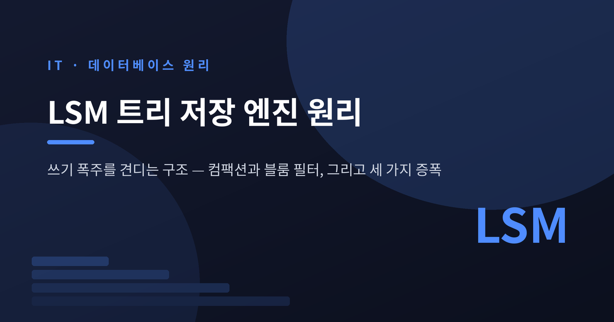
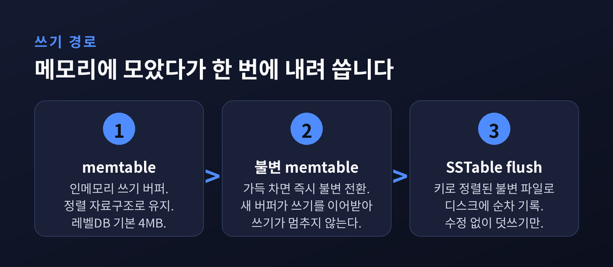
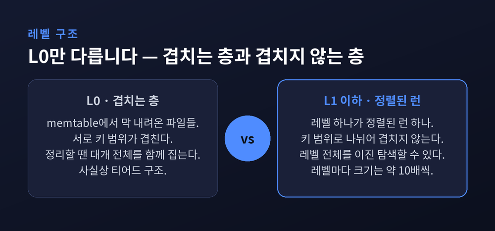
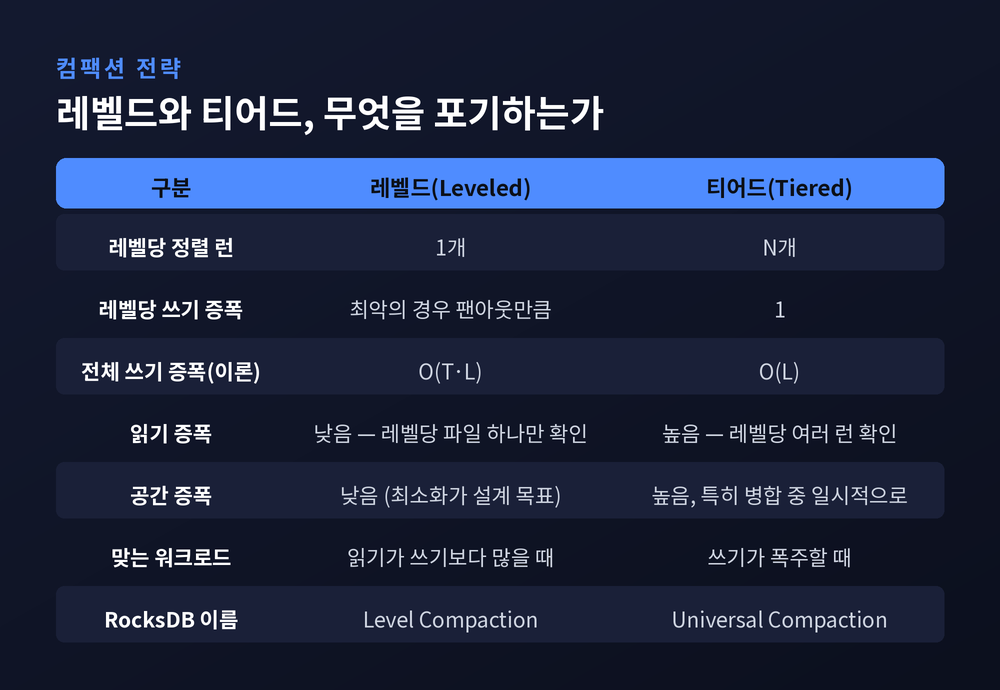
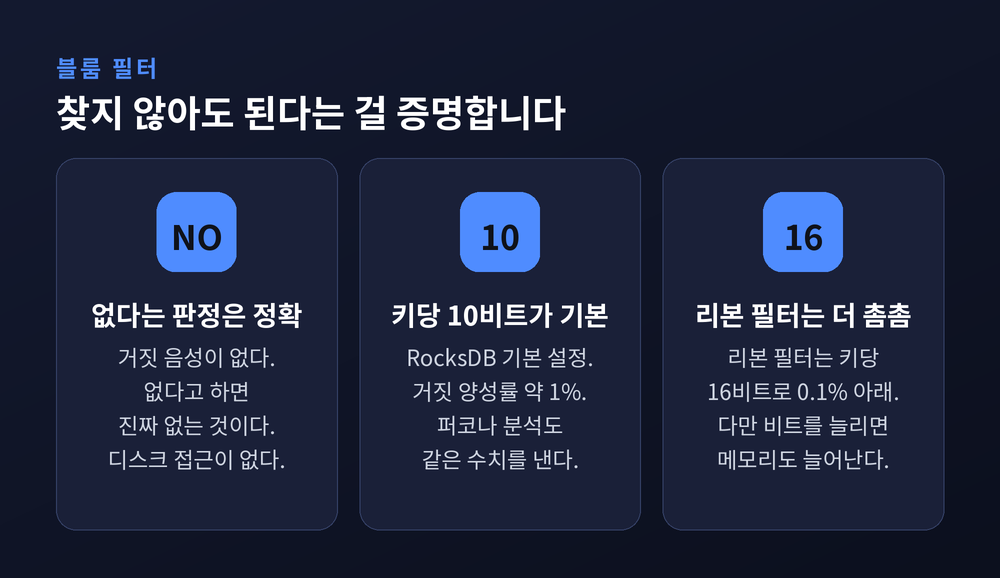
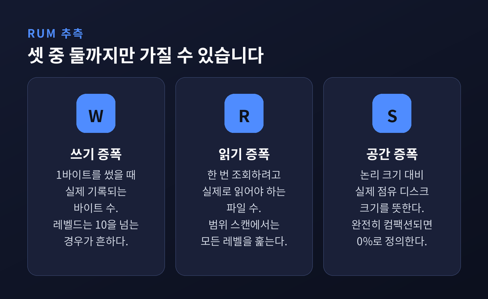
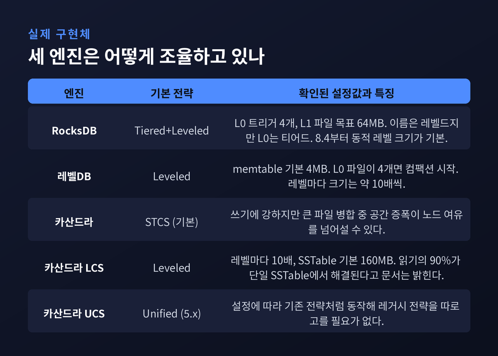

memtable에서 컴팩션까지, 쓰기 폭주를 견디는 저장 구조와 세 가지 증폭의 트레이드오프

초당 수만 건의 쓰기를 받아내는 데이터베이스는 어떤 구조를 쓰는지 정리해 보겠습니다.
카산드라, RocksDB, 그리고 그 뒤에 있는 LSM 트리 이야기입니다.
원리부터 실제 설정값까지 순서대로 짚어 보겠습니다.
세 줄 요약
LSM 트리는 랜덤 쓰기를 순차 쓰기로 바꾸는 저장 구조입니다. 메모리 버퍼에 모았다가 정렬된 파일로 한꺼번에 내려 씁니다.
대신 읽을 때 여러 파일을 뒤져야 하고, 뒤에서 파일을 병합하는 컴팩션 비용을 계속 치릅니다.
결국 읽기·쓰기·공간 중 둘까지만 최적화할 수 있다는 것이 이 설계의 전부입니다.
LSM 트리는 최근 기술이 아닙니다.
패트릭 오닐을 비롯한 네 명의 연구자가 1996년 6월 학술지 『Acta Informatica』 33권 4호에 발표한 논문 「The Log-Structured Merge-Tree (LSM-Tree)」가 출발점입니다. 분량은 351쪽부터 385쪽까지입니다.
논문이 풀려던 문제는 하나였습니다. 디스크에 순차적으로만 쓰면서도 데이터를 정렬 상태로 유지하는 방법입니다.
당시 제안된 구조는 단순합니다. 메모리에 있는 작은 트리 C0와 디스크에 있는 큰 트리 C1. 새 레코드는 전부 C0에 들어갑니다. C0가 임계값을 넘으면 그 내용을 빼내 C1으로 병합합니다.
이 아이디어가 훗날 빅테이블, 카산드라, HBase, Riak으로 이어졌습니다. 예전엔 학술 논문 속 개념이었지만, 지금은 대규모 쓰기를 다루는 저장 엔진의 표준 문법이 되었습니다.
LSM 트리의 쓰기는 세 단계를 거칩니다.
먼저 memtable입니다. 인메모리 쓰기 버퍼이고, 보통 스킵리스트 같은 정렬 자료구조로 유지됩니다. 레벨DB의 기본 버퍼 크기는 4MB입니다.
memtable이 가득 차면 그 자리에서 불변(immutable) 상태로 전환됩니다. 그리고 새 memtable이 곧바로 쓰기를 이어받습니다. 쓰기가 멈추지 않는 이유가 여기 있습니다.
마지막으로 불변 memtable이 디스크로 내려가 SSTable(Sorted String Table) 파일 하나가 됩니다. 이 과정을 flush라고 부릅니다.
SSTable의 성격이 중요합니다. 키로 정렬되어 있고, 한 번 쓰이면 절대 수정되지 않습니다. 수정이든 삭제든 새 레코드를 위에 덧쓸 뿐입니다. 삭제는 tombstone이라는 표식을 남기는 방식으로 처리됩니다.
디스크 입장에서 보면 모든 쓰기가 "새 파일을 통째로 순차 기록"하는 일이 됩니다. 제자리를 찾아가 고치는 랜덤 쓰기가 사라집니다.

flush된 SSTable들은 여러 레벨로 정리됩니다. L1, L2, L3 순으로 아래로 내려갑니다.
여기서 L0는 예외입니다.
RocksDB 공식 문서는 L0를 "memtable에서 막 flush된 파일들이 모이는 특별한 레벨"로 규정합니다. 이 파일들은 서로 키 범위가 겹칩니다. 각자 다른 시점의 memtable을 그대로 내려받았으니 당연한 결과입니다. 그래서 L0를 정리할 때는 대개 L0 파일 전체를 함께 집어 올려야 합니다.
반면 L1 이하의 모든 레벨은 하나의 정렬된 런(sorted run) 입니다. 레벨 안에서 SSTable들이 키 범위로 나뉘어 있고 서로 겹치지 않습니다.
이 차이가 읽기 성능을 가릅니다. 겹치지 않으니 레벨 하나에서 "이 키가 어느 파일에 있는가"를 이진 탐색으로 곧장 좁힐 수 있습니다. RocksDB 문서는 이를 "레벨 전체 키에 대한 완전한 이진 탐색"이라고 설명합니다.
레벨 크기는 아래로 갈수록 지수적으로 커집니다. 인접 레벨 사이의 크기 비율을 팬아웃(fanout) 이라 부르고, 실무 기본값은 대체로 10배입니다. 레벨DB도, RocksDB 문서의 예시도, 카산드라의 레벨드 컴팩션도 모두 10배를 씁니다.

파일을 계속 덧쓰기만 하면 같은 키의 낡은 버전이 쌓입니다. 이걸 뒤에서 병합해 정리하는 작업이 컴팩션(compaction) 입니다.
RocksDB 공식 문서는 컴팩션 알고리즘을 다섯 갈래로 분류합니다. Classic Leveled, Tiered, Tiered+Leveled, Leveled-N, FIFO입니다. 그중 RocksDB가 실제로 구현한 것은 세 가지입니다. 코드상 Level Compaction으로 불리는 Tiered+Leveled, Universal로 불리는 Tiered, 그리고 FIFO입니다.
레벨드(Leveled) 컴팩션은 공간 증폭을 최소화하는 대신 읽기와 쓰기 증폭을 감수합니다. 레벨마다 정렬된 런이 딱 하나뿐이라 읽을 때 확인할 파일이 적습니다. 대신 새 데이터가 내려올 때마다 아래 레벨의 겹치는 파일을 다시 써야 합니다. 문서는 레벨당 쓰기 증폭이 최악의 경우 팬아웃과 같다고 적고 있습니다.
티어드(Tiered) 컴팩션은 정반대입니다. 쓰기 증폭을 최소화하는 대신 읽기와 공간 증폭을 감수합니다. 한 레벨에 여러 개의 정렬된 런이 공존하도록 두었다가 한꺼번에 병합합니다. RocksDB 문서의 표현을 그대로 옮기면 "레벨당 쓰기 증폭이 1" 입니다. 레벨드의 팬아웃과 비교하면 격차가 큽니다.
이론값으로도 갈립니다. 학계 연구는 레벨링의 전체 쓰기 증폭을 O(T·L), 티어링을 O(L)로 정리합니다. T는 크기 비율, L은 레벨 수입니다.
티어드에도 약점이 있습니다. 가장 큰 레벨을 병합하는 순간 원본과 결과물이 동시에 디스크를 차지합니다. RocksDB 문서는 이를 "일시적 공간 증폭이 크다"고 표현합니다. RocksDB Universal의 max_size_amplification_percent 기본값이 200인 것도 같은 맥락입니다. 100바이트짜리 데이터베이스가 최대 300바이트까지 차지할 수 있다는 뜻입니다.

레벨이 여러 개라면 조회 한 번에 여러 파일을 뒤져야 합니다. 이 부담을 실전에서 눌러주는 장치가 블룸 필터입니다.
블룸 필터는 SSTable마다 붙어 있는 작은 메모리 구조입니다. 하는 일은 하나입니다. "이 파일에 이 키는 없다" 를 디스크를 건드리지 않고 즉시 판정합니다.
성질이 비대칭적입니다. "없다"는 판정은 100% 정확합니다. "있을지도 모른다"는 판정에만 오차가 섞입니다. 거짓 양성은 있어도 거짓 음성은 없습니다.
RocksDB 기본 설정은 키당 10비트이고, 이때 거짓 양성률은 약 1%입니다. 퍼코나가 MyRocks를 분석한 글도 같은 수치를 제시합니다. 두 소스가 일치합니다.
비트를 늘리면 정확도는 올라갑니다. 다만 메모리 사용량과 공간 증폭도 함께 올라갑니다. RocksDB가 2021년 말 공개한 리본 필터(Ribbon Filter)는 키당 16비트로 거짓 양성률 0.1% 아래를 달성했습니다.

지금까지 나온 트레이드오프는 결국 세 축으로 수렴합니다.
마크 캘러헌은 자신의 블로그에서 이 관계를 이렇게 정리했습니다. "하나의 자료구조는 읽기·쓰기·공간 중 최대 두 가지까지만 최적화할 수 있다." RUM 추측이라 부르는 명제입니다.
같은 글은 B-트리와 LSM 트리를 이 틀에 얹어 비교합니다. B-트리는 LSM보다 읽기 증폭이 낮고, LSM은 B-트리보다 쓰기 증폭이 낮습니다.
방식의 차이에서 비롯된 결과입니다. B-트리는 제자리에서 고칩니다. 페이지를 읽고, 수정하고, 같은 자리에 다시 씁니다. 루트에서 리프까지 정해진 횟수만 거치면 되니 읽기가 예측 가능합니다. 대신 쓰기가 흩어집니다.
LSM 트리는 덧붙이고 나중에 병합합니다. 쓰기는 순차적이라 저장장치에 친화적입니다. 대신 읽을 때 여러 레벨을 훑어야 합니다. 특히 범위 스캔에서 불리합니다. 모든 레벨을 읽어야 하니 읽기 증폭이 그대로 누적됩니다.
수치를 단정하기는 조심스럽습니다. RocksDB 공식 문서가 밝히는 것은 "레벨드 컴팩션의 쓰기 증폭은 10을 넘는 경우가 흔하다" 정도입니다. 그보다 구체적인 배수는 워크로드와 팬아웃, 레벨 수에 따라 달라집니다. 최신 SSD의 투명 압축 기능을 활용하면 B-트리와의 격차가 좁혀진다는 반론도 2022년 FAST 학회에서 제기된 바 있습니다. 아직 한쪽으로 정리된 논쟁은 아닙니다.

RocksDB는 흥미로운 절충을 택했습니다. 이름은 레벨드 컴팩션이지만 실제로는 Tiered+Leveled입니다. 공식 문서가 직접 밝히고 있습니다. max_write_buffer_number 덕분에 memtable 계층에 여러 런이 존재할 수 있고, level0_file_num_compaction_trigger 덕분에 L0에도 여러 런이 존재합니다. 그래서 "L0는 티어드다" 라고 문서는 못 박습니다. 이 트리거의 기본값은 4이고, L1 파일 목표 크기인 target_file_size_base의 기본값은 64MB입니다.
RocksDB 8.4부터는 level_compaction_dynamic_level_bytes가 기본 활성화됐습니다. 레벨 목표 크기를 위에서 아래로 곱해 내려가는 대신, 마지막 레벨의 실제 크기에서 역산해 위로 올라가며 나눕니다. 목적이 분명합니다. 문서의 표현을 그대로 옮기면 "데이터의 90%가 마지막 레벨에, 9%가 그 위 레벨에 저장되도록 보장" 하기 위해서입니다. 공간 증폭에 상한을 걸겠다는 뜻입니다.
이 방향은 논문으로도 뒷받침됩니다. 시잉 동을 비롯한 저자들이 CIDR 2017에 발표한 「Optimizing Space Amplification in RocksDB」는 페이스북 프로덕션 환경에서 저장 공간이 주된 병목이었다고 밝힙니다. 배수를 키우면 공간 증폭과 읽기 증폭은 줄지만 쓰기 증폭이 늘어난다는 관찰도 함께 담겨 있습니다.
레벨DB는 원조에 가깝습니다. memtable 4MB, L0 파일 4개면 컴팩션 시작, L1 목표 10MB, 이후 레벨마다 10배. 값들이 단순하고 읽기 쉽습니다.
카산드라는 전략을 아예 선택지로 열어 두었습니다. STCS(사이즈 티어드), LCS(레벨드), TWCS(타임윈도우), UCS(통합) 네 가지입니다. 기본은 STCS이고 쓰기 중심 워크로드에 강하지만, 시간이 지나면 읽기 증폭이 커집니다. 스킬라DB 문서는 STCS의 더 큰 문제로 공간 증폭을 지목합니다. 큰 SSTable을 병합하는 동안 새 파일과 옛 파일이 동시에 디스크를 차지해, 노드의 통상적인 여유 공간을 넘어설 수 있다는 지적입니다.
LCS는 반대편에 섭니다. 각 레벨이 이전 레벨의 10배이고 SSTable 기본 크기는 160MB입니다. 그리고 공식 문서가 내세우는 보장이 하나 있습니다. 행 크기가 대체로 균일하다는 전제 아래 "전체 읽기의 90%가 단일 SSTable에서 해결된다" 는 것입니다.
카산드라 5.x가 권하는 UCS는 아예 다른 접근입니다. 설정에 따라 기존 전략들처럼 동작할 수 있어, 레거시 전략을 따로 고를 필요가 없다고 문서는 안내합니다.

균형을 위해 한계도 적어 둡니다.
LSM 트리는 범위 스캔에 약합니다. 모든 레벨을 읽어야 하니 B-트리보다 처리량이 눈에 띄게 떨어진다는 지적이 티KV와 USENIX 자료 양쪽에서 나옵니다.
컴팩션은 공짜가 아닙니다. 백그라운드에서 돌지만 디스크 대역폭과 CPU를 실제로 씁니다. 쓰기가 몰리는 순간 컴팩션이 따라가지 못하면 쓰기 지연이 발생합니다.
설정도 만만치 않습니다. 팬아웃, 레벨 수, 블룸 필터 비트 수, 컴팩션 트리거. 어느 하나를 건드리면 나머지 두 증폭이 함께 움직입니다.
무엇보다 정답이 워크로드마다 다릅니다. 읽기가 많으면 레벨드, 쓰기가 폭주하면 티어드. 이 선택을 대신해 줄 기본값은 존재하지 않습니다.
정리하면 이렇습니다.
LSM 트리는 빠른 쓰기를 공짜로 얻은 구조가 아닙니다. 랜덤 쓰기를 순차 쓰기로 바꾸는 대가로, 읽기와 공간을 담보로 잡았습니다. 컴팩션은 그 담보를 조금씩 갚아 나가는 일입니다.
"LSM 트리는 비용을 없앤 것이 아니라, 한가한 시간으로 옮겨 놓은 것입니다."
그러니 이 구조를 쓸 것이냐는 물음은 성능 문제가 아닙니다. 무엇을 포기할 수 있는지 먼저 정하시면, 답은 이미 정해져 있을 것입니다.
참고 소스